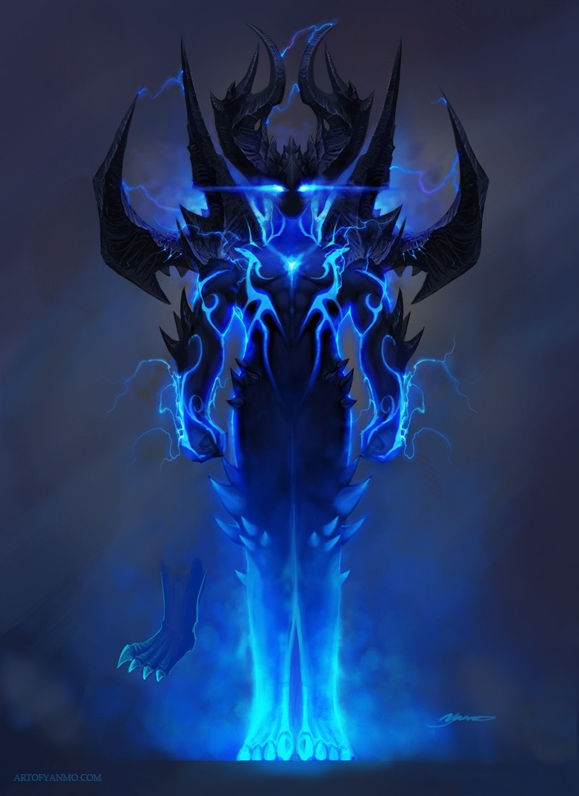

The Blue Myrl
The Blue Myrl
He is a super hero who is able to create
blue thunders that are quite disturbing for
Mr.Edieman while observing things around.
While Mr.Edieman tries to help others using
his superpower, The blue Myrl uses his super
power for evil purposes.
- Book an Uber from Maryville to Kansas International Airport
- Get in the car and go to kansas Airport.
- Book a flight ticket to Chicago
- 1.Check in the Baggage at the counter.
- Board the flight to Chicago airport
- Get down in the Airport in and pick a cab to Lewis university.
- Walk in to the blackwoods nearby the college
- You can find him in the dark house on the rear end of the village

Index